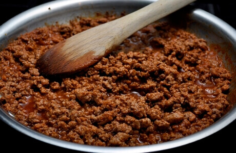

POVERTY GAINS
MINIMAL MINCE

This is my go-to meal. I eat this almost every single day and I never get bored of it, much to the chagrin of those around me. Why? It takes almost no time to both prepare and cook, is very simple, contains around [AMOUNT] of protein, around 1000 calories and if you do feel like a change you can just switch up the flavourings. It will likely be the most expensive part of your food consumption due to the meat, but it's worth it for the nutrition that it provides. Aldi sell a beef and pork mince for £3.00, but Tesco and Asda shoppers can sometimes pick up a bargain in the reduced aisle. Tesco also sometimes have offers on premade burgers and meatballs which you can blend up and use for this recipe if you fancy. Use your brain, shop around, look at price tags! Scale the ingredients as you like e.g if you want to reduce costs use a third of a pack of mince per person.
Ingredients (serves 1)
- Half a 750g pack of minced meat
- Half a white onion
- Half a garlic clove
- 1 egg
- 1 teaspoon of lard
- Herbs and spices of your choice (I enjoy dried chilli, thyme, oregano but experiment yourself)
- 1 Oxo cube
Instructions
- Heat up a pan on a medium heat. After a minute or two once the pan is hot, throw your lard in there. Let it melt and coat the base of the pan. Chop your onion and garlic up in the meantime.
- Throw your chopped onion into the pan. Your onion should be sizzling instantly, else your pan is too cold. Fry until almost browned, for a minute or so.
- Add your garlic and flavourings and fry for another minute until onion is browned.
- Add your mince to the pan. PROTIP: break up the mince beforehand (I slice it with a knife while it's still in the packaging) to save you adding a huge block all at once and having to do it in the pan with a wooden spoon.
- Fry your mince until browned and no red is visible. If it starts sticking to the bottom of the pan remove it from the heat for a minute or so.
- Crush and sprinkle your oxo cube into your pan with one hand while stirring with your other hand. Do it quickly, this prevents clumping of the oxo in your mince, and also stops the oxo granules sticking to your hand from the heat of the steam. Mix it in good.
- Crack and egg and chuck that in there as well. Eggs are very nutritious. Mix in well.
- Spoon it out onto a plate, serve with rice or just eat it on its own.
Cost: Around £1.50-2.00
Calories: Around 1000kcal
Go back
{kind=link}